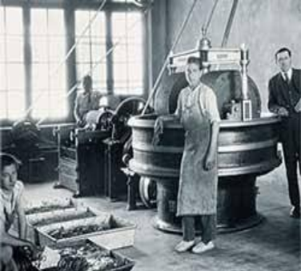
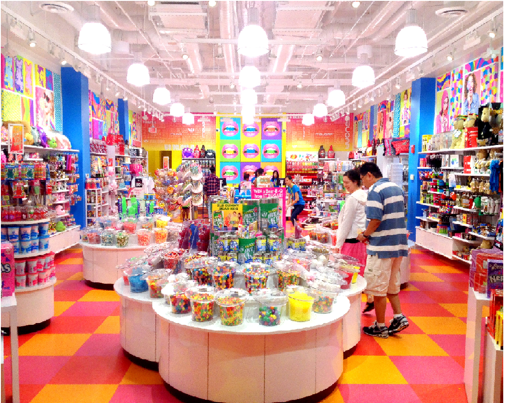

Sweet UCAB fue fundado en 1951 por un grupo de pioneros con el objetivo de ofrecer golosinas de calidad a un precio accesible para consumidores de todo el mundo. Nuestra historia se remonta al año 1935, cuando una joven inmigrante de Francia llamada Amelia Farrisiti decidió radicarse en Caracas. Allí instaló una panadería oficio que ejercía en su Francia natal, 10 años después su primogénita le propuso la idea de montar una fábrica de caramelos que tuviera un volumen importante de producción con el fin de reducir costos e incrementar la competitividad.En el año de 1977 se produce la primera paleta de caramelo con polvo de chile en el mercado, nuestra marca líder Chupilita. Un dulce innovador que les permitió a nuestros pequeños consumidores mezclar el sabor y la diversión en un solo producto. Más adelante le apostamos al mercado de exportación. Para lograr nuestro objetivo hicimos un esfuerzo titánico haciendo los ajustes necesarios en la producción y en los empaques para satisfacer los gustos de consumidores de más de 35 países en el mundo. Esto nos incitó a participar en las Ferias de Confitería Internacionales donde concurren productores y compradores de todo el mundo. En estos eventos pudimos ofrecer nuestros dulces. A partir de entonces hemos crecido sostenidamente como empresa, expandiendo nuestra producción y nuestra cobertura de distribución. Hemos logrado posicionar nuestras marcas consiguiendo un lugar importante dentro de la industria de la confitería venezolana. Seguimos exponiendo nuestros productos en las más prestigiosas ferias en el ramo de la confitería dentro y fuera de Venezuela, para mantener y expandir nuestras ventas. Estamos orgullosos de permanecer en la preferencia de nuestros consumidores por nuestra calidad y sabor.


Sweet Shop es una visita obligada para todos aquellos que sueñan con vivir en el mundo de Willy
Wonka y que sienten un placer inmenso a la hora de comer caramelos. Sweet Shop es la tienda de
caramelos más grande de América Latina. Abrió sus puertas hace algunos meses en la ciudad de
Caracas. Son más de 10.000 metros cuadrados de caramelos de todo tipo y color.
Como no podía ser de otra manera allí se puede encontrar una amplia
gama de caramelos. Se ofrece una oferta inmensa de caramelos provenientes de todas partes del
mundo pero principalmente de nuestra fábrica Sweet UCAB. Paletas de distintas formas, tamaños
y todos los sabores que se pueden imaginar hay tentadoras delicias que esperan para ser degustadas. Sweet Shop cuenta con la pared más grande de
dulces; está llena de ositos de goma, gusanitos y caramelos (todas excelentes opciones que hacen
realmente difícil la decisión de qué llevar). Además, en el centro de la tienda, se encuentra
un enorme árbol de chocolate, lleno de paletas de colores.Bajo el método “Pick and Mix” se puede
elegir la combinación de dulces que se desee...
En las tiendas Mini Sweet Shop UCAB los clientes pueden realizar sus compras al igual que en Sweet
Shop, solo que son pequeños espacios donde ofrecemos todos nuestros productos pero en menor
cantidad.